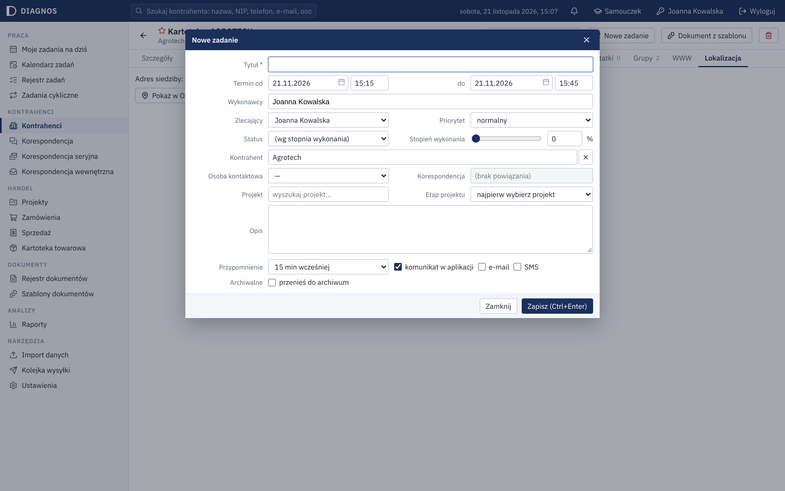

DIAGNOS
PANEL CRM · ZADANIA I KALENDARZZadania i kalendarz
Plan pracy, o którym system sam przypomina
Zadania porządkują dzień każdego operatora i dają kierownikowi bieżący obraz pracy zespołu. Po zalogowaniu każdy widzi swój plan na dziś i zadania zaległe.
- Zadanie ma termin, wykonawcę lub kilku wykonawców, zlecającego, priorytet, status i stopień wykonania w procentach.
- Powiązanie z kontrahentem, osobą, korespondencją lub projektem.
- Kalendarz dzienny i tygodniowy z siatką 5–60 minut; zadanie przeciąga się myszą na nowy termin.
- Przypomnienia z wybranym wyprzedzeniem: komunikat na ekranie wymagający potwierdzenia lub odłożenia, e‑mail, SMS.
- Zadania cykliczne: codziennie, w wybrane dni tygodnia, co miesiąc lub co kilka dni, z datą końca.
- Zadania automatyczne według reguł ustawianych przez administratora, np. kontakt z nowym kontrahentem po trzech dniach.
- Ewidencja czasu: godziny z zadań i rozmów sumują się dla operatora, kontrahenta i projektu.
- Kierownik widzi zadania swoich pracowników i stan ich wykonania.


Projekty, zamówienia, sprzedaż
Projekty z etapami i opiekunem mają własną kartotekę z korespondencją, zadaniami i załącznikami.
Zamówienia i dokumenty sprzedaży powstają z pozycji kartoteki towarowej; wartości netto i brutto liczą się same. Historia zamówień i sprzedaży jest widoczna w kartotece kontrahenta.
DIAGNOS · panel CRM4